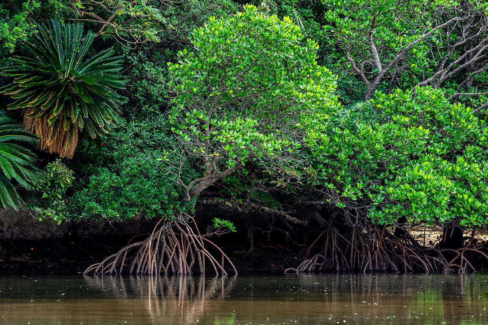
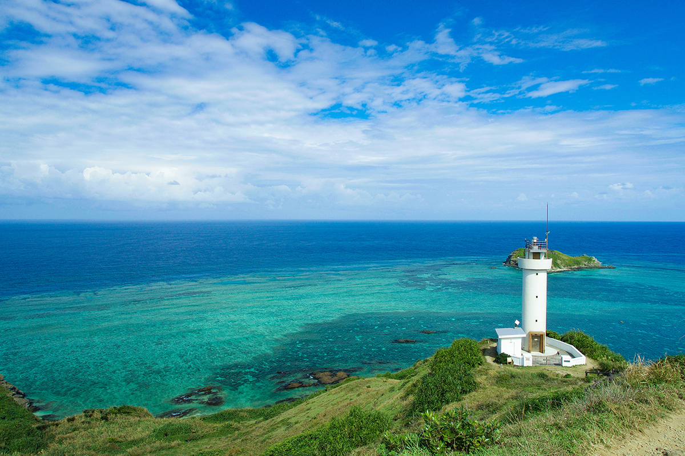
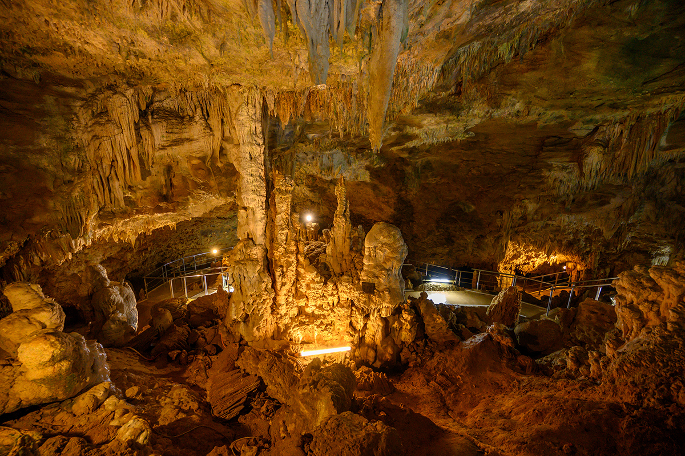
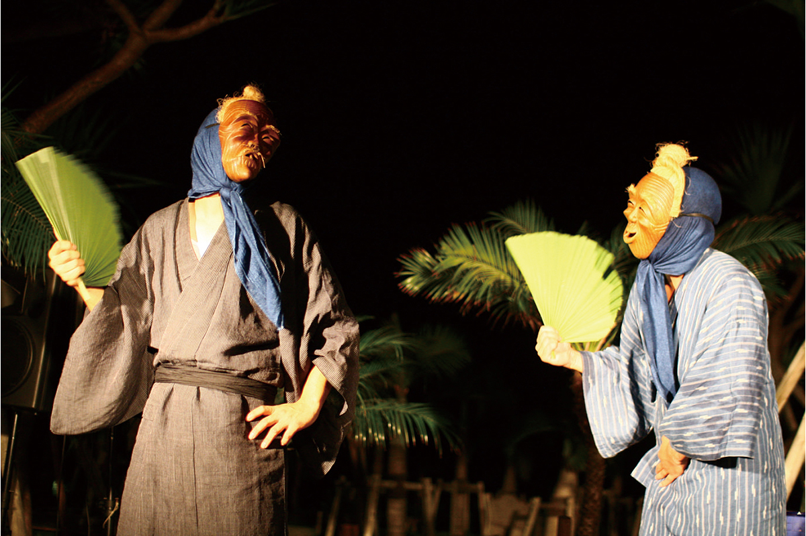
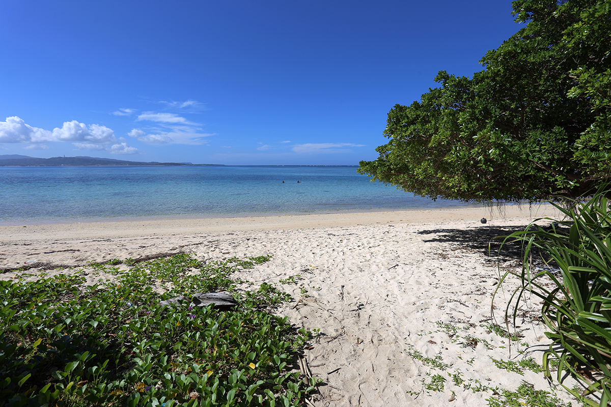
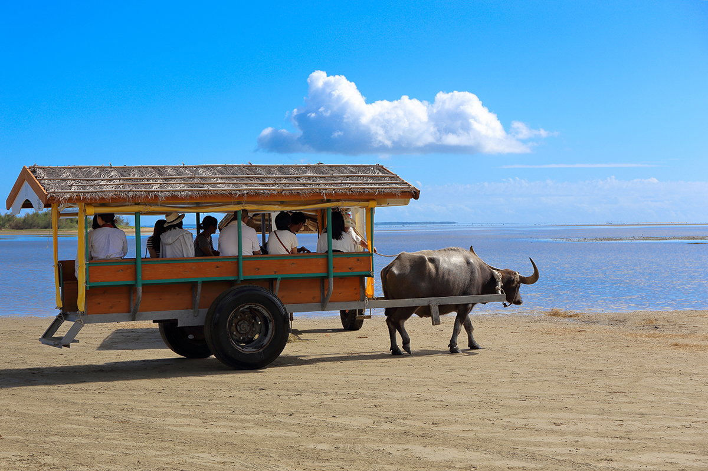
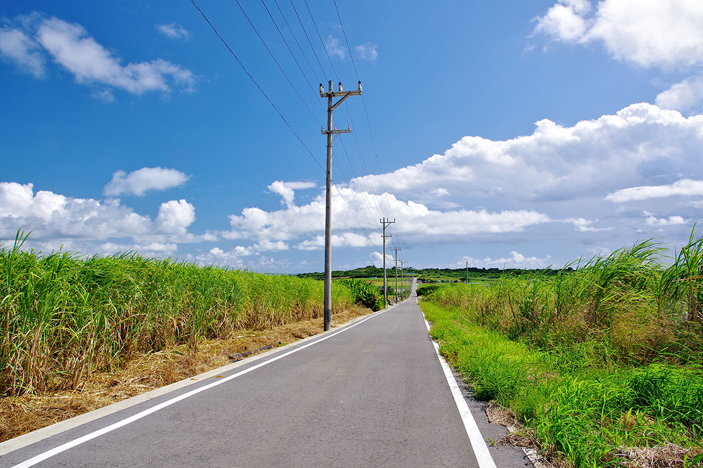
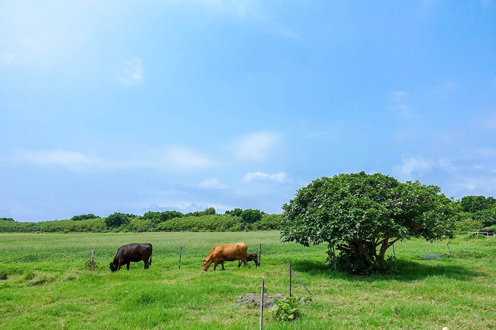
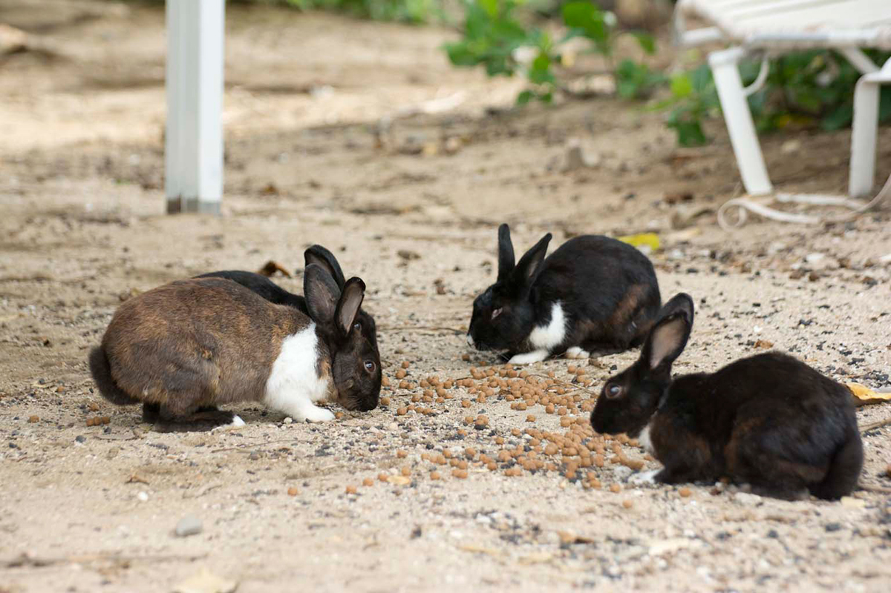

Префектура Окинава · острова Яэяма · острова
Исигаки и малые острова Яэямы: мангровые реки, буйволы, коровы и кролики

В префектуре Окинава около 160 островов, больших и маленьких. Дальше всех на юге лежат острова Яэяма: Исигаки с его бухтами и пещерами и соседние островки, где буйволов больше, чем машин, а коров больше, чем людей.
Исигаки
Ворота островов Яэяма
Исигаки лежит примерно в 400 км к югу от острова Окинава. Субтропический климат, пышная растительность и изумрудное море, где можно увидеть мант, морских черепах и коралловые рифы. С Исигаки начинается почти любое путешествие по островам Яэяма: сюда прилетают самолёты, отсюда уходят катера на соседние острова.
На побережье хватает видов, ради которых стоит сюда ехать. Бухта Кабира получила три звезды в японском «Зелёном гиде Мишлен», и это единственное место в префектуре Окинава с такой оценкой. На северной оконечности острова стоит маяк Хиракубо: отсюда видно и Тихий океан, и Восточно-Китайское море.

Сталактитовую пещеру Исигаки природа создавала около 200 000 лет. Её залы подсвечены, и подземный мир выглядит почти фантастически. Наверху тоже есть чем заняться: дайвинг, каяки среди мангровых зарослей и другие прогулки на природе. У реки Фукидо растут целые рощи мангров.

Отдельная причина приехать это праздники. В дни старого календарного Обона по домам ходят люди в деревянных масках с глубокими морщинами и исполняют буддийский танец нэмбуцу: этот обряд называется «ангама». В шестой месяц по старому календарю четыре квартала города устраивают праздник урожая «Сикаадза». Проводят здесь и гонки на лодках «хари».

Из местной еды стоит попробовать говядину «Исигаки-гю», яэяма-собу и рыбную пасту камабоко в яэямском варианте.
Остров Исигаки
- Адрес
- префектура Окинава, город Исигаки
- Как добраться
- самолётом до аэропорта Исигаки: из Нахи около 1 часа, с Мияко около 30 минут, из Ханэды около 3 часов 10 минут, из аэропорта Кансай около 2 часов 35 минут; по острову на автобусе, такси, арендованной машине, мотороллере или велосипеде
- Телефон
- +81 980-82-2809 (Ассоциация туризма города Исигаки)
Остров занимает 222,24 кв. км, длина береговой линии 162,2 км, а высшая точка, гора Омото, поднимается на 525,5 м. Живут здесь 49 530 человек (данные 2024 года). Соседние малые острова входят в посёлок Такэтоми и совсем невелики.
Хатома
Лазурное море и нетронутая природа

Хатома остаётся одним из самых нетронутых островов Яэямы. Здесь растут редкие колонии голубого коралла, а у пляжа Ярахама белоснежный песок и море цвета лазурита. Эти виды воспели в народной песне «Хатома-буси», родившейся на острове, а ещё Хатома стал местом съёмок телесериала «Рури но сима».
Остров совсем маленький: 0,96 кв. км и 3,9 км по берегу, живут здесь 65 человек. Объехать его проще всего на велосипеде.
Остров Хатома
- Адрес
- префектура Окинава, уезд Яэяма, посёлок Такэтоми
- Как добраться
- скоростным катером из порта Исигаки около 45 минут, из порта Уэхара на Ириомотэ около 15 минут; по острову на велосипеде
- Телефон
- +81 980-82-5445 (Ассоциация туризма посёлка Такэтоми)
Юбу
На остров в повозке с буйволом

На Юбу попадают с Ириомотэ в повозке, запряжённой водяным буйволом: дорога через мелководье занимает около 15 минут. Сам остров сложен из песка, который нанесло морским течением, и поднимается над водой всего на 1,5 м. Здесь растёт бугенвиллия и живёт бабочка оогомадара, которую знают по «золотым куколкам». Субтропическая флора и фауна здесь на каждом шагу.
Площадь Юбу 0,15 кв. км, живут на нём 9 человек, а обходят остров пешком.
Остров Юбу
- Адрес
- префектура Окинава, уезд Яэяма, посёлок Такэтоми
- Как добраться
- с Ириомотэ в повозке с буйволом около 15 минут; по острову пешком
- Телефон
- +81 980-82-5445 (Ассоциация туризма посёлка Такэтоми)
Кохама
«Пуп» островов Яэяма

Кохама лежит почти в самом центре островов Яэяма, отсюда и прозвище «пуп». Прямая дорога между полями сахарного тростника называется «Сахарной дорогой». Остров бережёт свои традиции: народную песню «Кохама-буси», крашение индиго и ткачество. Здесь снимали утренний телесериал NHK «Тюрасан».
Кохама побольше соседей: 7,86 кв. км, 16,6 км по берегу, высшая точка, гора Уфудакэ, 99,8 м. Живут здесь 755 человек.
Остров Кохама
- Адрес
- префектура Окинава, уезд Яэяма, посёлок Такэтоми
- Как добраться
- скоростным катером из порта Исигаки около 30 минут, из порта Охара на Ириомотэ около 30 минут; по острову на экскурсионном автобусе, арендованной машине, мотороллере или велосипеде
- Телефон
- +81 980-82-5445 (Ассоциация туризма посёлка Такэтоми)
Куросима
Остров коров в форме сердца

Куросима окружён коралловыми рифами и живёт скотоводством. На пастбищах пасутся коровы, и их здесь примерно в десять раз больше, чем людей. По очертаниям остров похож на сердце, поэтому его называют ещё «островом-сердцем». Нетронутый пляж Нисино-хама облюбовали морские черепахи: они откладывают здесь яйца.
Площадь Куросимы 10,02 кв. км, длина берега 12,6 км, а высшая точка всего 15,3 м: остров почти плоский. Живут здесь 227 человек.
Остров Куросима
- Адрес
- префектура Окинава, уезд Яэяма, посёлок Такэтоми
- Как добраться
- скоростным катером из порта Исигаки около 30 минут; по острову на экскурсионном автобусе, арендованной машине, мотороллере или велосипеде
- Телефон
- +81 980-82-5445 (Ассоциация туризма посёлка Такэтоми)
Каяма
Остров, где живут кролики

На Каяме живёт около 500 диких кроликов, и остров известен как «Кроличий». Постоянный житель у него всего один. В окрестных водах около 400 видов кораллов и множество ярких тропических рыб, поэтому Каяму называют ещё «рыбным полем». На суше можно посмотреть на кроликов, в море на рыб.
Остров крошечный: 0,39 кв. км, 2,5 км по берегу. Регулярного сообщения нет, сюда приезжают с экскурсией или на лодке-перевозчике.
Остров Каяма
- Адрес
- префектура Окинава, уезд Яэяма, посёлок Такэтоми
- Как добраться
- регулярного сообщения нет, только экскурсии или лодка-перевозчик; по острову пешком
- Телефон
- +81 980-82-5445 (Ассоциация туризма посёлка Такэтоми)
Фото: OCVB.